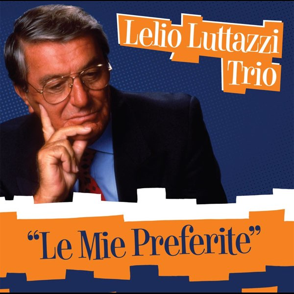
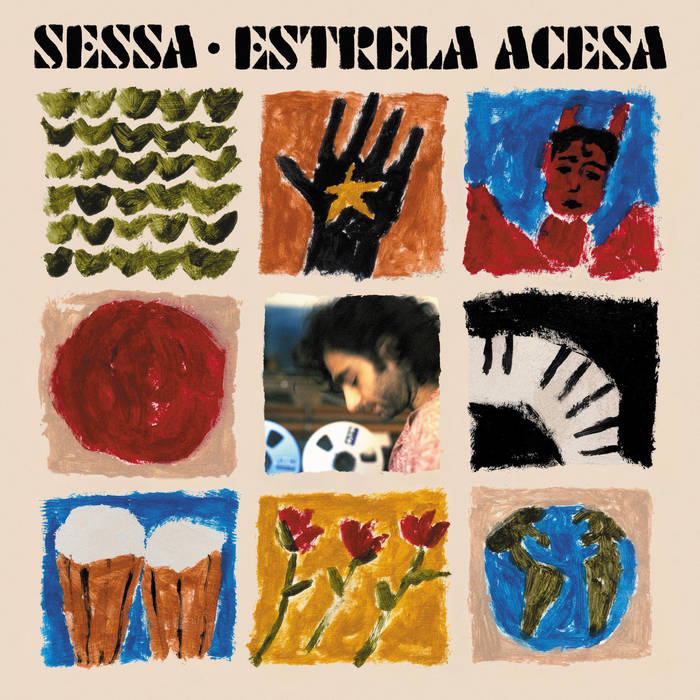
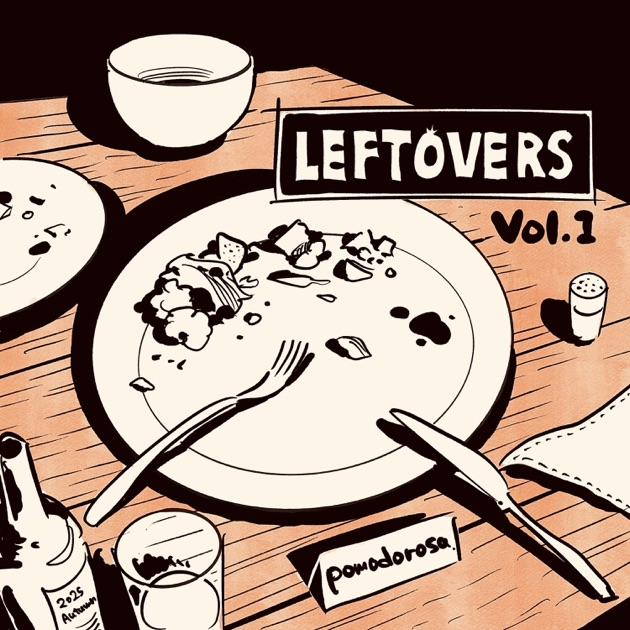

Le Mie Preferite - Lelio Luttazzi
Estrela Acesa - Sessa
Leftovers - Pomodorosa
Remember when I used to climb in Pittsburgh?
I remember taking the 75 to Ascend Southside. That gym was awesome.
Getting off at the intersection where the tattoo with the letter 'K' made of bright yellow circle lights.
Taking a left onto 21st street, then another left onto Mary street and pass by a crossfit gym, into parking lot, go up 2 flights of stairs yuuuuppp.
There was the awesome cave section that formed an arch, and then a top rope section, a really nice slab wall to the left of the entrance, and an island across it.
I remember one day it was like 10pm, and I was waiting for the bus back from Southside and I'm pretty sure I saw someone very special drive past me, and we saw each other...
Two times I climbed with the TA staff, and then we'd get food after.
Sometime's I'd climb at Point Breeze, and that would be with the Master's students or with Nate!
What comes to mind right now is being in Nate's Hatsune Miku hacked car and playing super bass heavy music.
I feel like I've brought back a little spark just by writing this.